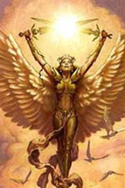

| Climate/Terrain | Any (Upper Planes) |
| Frequency | Very Rare (Uncommon) |
| Organization | Solitary (Group) |
| Activity Cycle | Any |
| Diet | Omnivore |
| Intelligence | Highly Intelligent (13) 18 Punti Combat. |
| Treasure | None |
| Alignment | Lawful Good |
| No. Appearing | 1d3+2 (1) |
| Armor Class | 3 |
| Movement | 12 Fl. 18 (man. B) |
| Hit Dice | 6 + 2 |
| Thac0 | 15 |
| No. of Attacks | 2 spade lunghe (fattore iniziativa +5) |
| Damage / Attacks | 1d8 / 1d8 |
| Special Attacks | Vedi sotto |
| Special Defenses | Vedi sotto |
| Magic Resistance | 30% |
| Size | Medium |
| Morale | Champion (16) |
| XP value | 1250 |
Descrizione
L'angelo minore tanatiano è una creatura angelica che rappresenta l'unità base delle schiere angeliche tanatiane. Gli angeli minori costituiscono le truppe scelte dei soldati della luce che combattono in nome dell'ordine e del bene e di Tanatos. Indossano una corazza di metallo che copre solo alcune parti del loro corpo ed impugnano due spade lunghe. Hanno uno splendido paio di ali bianche che gli permettono di volare ed una pelle dorata.
Combat
Gli angeli minori combattono in corpo a corpo utilizzando due spade lunghe. Costoro, infatti, sono in grado di combattere impugnando assieme tali armi senza alcuna penalità. Inoltre, quando gli angeli minori impugnano le spade infondono in queste lame energia positiva allo stato puro visibile tramite bagliori dorati sulle lame. Per tale motivo, ogni volta che un angelo minore colpisce con una di queste armi una creatura la cui esistenza si basa sul piano negativo (come i non morti) oppure una creatura demoniaca provocheranno 3 danni da energia positiva supplementari per ogni colpo inferto. Tali comuni spade lunghe, inoltre, quando sono impugnate dagli angeli minori sono considerate armi magiche +1 al fine di colpire creature con riduzione dei danni. Se utilizzate, quindi, contro creature colpibili solo da armi magiche con incantamento +2 o superiori queste saranno inefficaci (gli attacchi provocheranno, però, i danni da energia positiva se dovuti).
Gli angeli minori
hanno i seguenti poteri speciali:
Riduzione dei Danni:
Gli angeli minori hanno
una particolare resistenza ai danni comuni e
riducono i primi 5 danni subiti
da ogni singolo colpo inferto.
I danni provocati dalla magia o dalle armi magiche che siano almeno +1 nonché
dagli attacchi fisici ad esse equivalenti non sono in alcun modo ridotti.
Aura di Energia Angelica
(1/giorno):
Gli angeli minori, una
volta al giorno, possono infondere energia positiva intorno a loro. Questo
potere è attivabile come
free action all'inizio di un qualsiasi round,
quando è attivato in una
sfera di 6 metri di raggio
attorno all'angelo si sparge energia positiva. Alla fine di ogni round, tutte le
creature che si trovano in quest'area (compreso l'angelo minore) ricevono
4 punti ferita di cure magiche,
le creature la cui esistenza si basa sul piano negativo (come i non morti) e le
creature demoniache ricevono, invece,
4 danni da energia positiva
(sempre qualora si trovino alla fine del round nell'area d'effetto).
L'aura persiste per 6 rounds
e resta centrata
sull'angelo minore quando questo si muove. Si noti che aure multiple attivate da
più angeli non sommano i loro effetti.
Luce Sacra:
Concentrandosi per un intero round
ed incrociando le spade sulla loro testa gli angeli minori possono attivare
questo potere. Alla fine del round di attivazione, qualora costoro non abbiano
perso la concentrazione, appare sulla loro persona una sfera di luce calda
ed estremamente luminosa. Questa
luce illumina come se fosse pieno giorno (continual light) in un raggio di 12
metri, spazzando via eventuali
tenebre magiche. La luce sovrasterà l'angelo minore seguendolo per un periodo di
10 rounds
al termine del quale si spegnerà. L'angelo, in ogni caso, può far terminare la
luce angelica con la sola volontà alla fine di ogni round di durata (free
action). L'angelo minore può utilizzare questo potere
un numero illimitato di volte al giorno
(se costui riattiva il potere prima del suo termine la durata della luce sarà
rinnovata per 10 rounds senza che calino nel frattempo le tenebre).
Habitat/Society
Gli Angeli Minori sono le truppe scelte delle armate celestiali, negli Upper Planes costoro girano in ronde composte da 3 a 5 angeli pattugliando le zone celesti ed i loro confini. Durante le guerre queste unità sono poste al comando di pattuglie di esseri angelici minori ed alleati assumendo il ruolo di capitani.
Gli angeli minori, a volte, si recano da soli nel primo piano materiale a svolgere missioni in favore del bene e della luce. Ciò avviene per ordine di entità angeliche superiori o quando sono convocati da creature del primo piano materiale che chiedano il loro aiuto.
Ecology
Gli angeli minori sono creature fiere e serie, estremamente devote alle potenze angeliche che servono ed al culto che rispettano.
Mystical Resource Sourge (Cuore) Quantità: 1, Presenza 75% - Effetto Particolare: Cura (Energia Positiva) - Qualità della Risorsa: Uncommon.